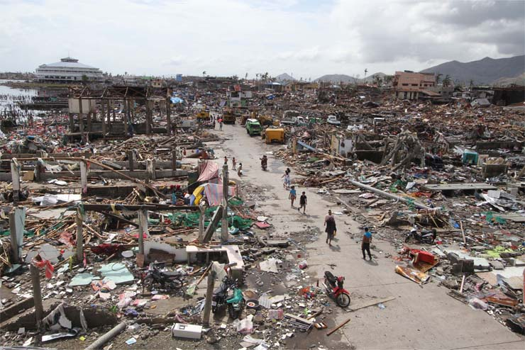
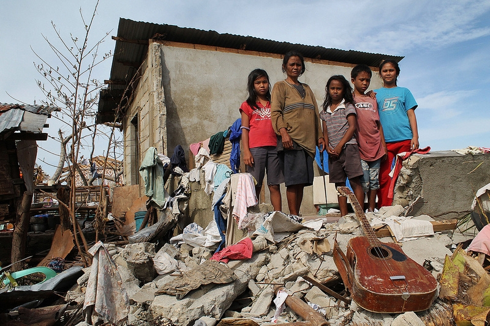
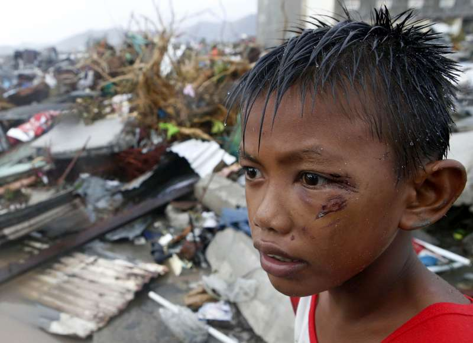

Storm is a general term widely used to describe a variety of atmospheric disturbances,
from regular showers and snowstorms to thunderstorms, wind,
and wind-related disturbances such as storms, tornadoes, tropical cyclones, and dust storms.
What is the difference between Typhoon, Hurricane, and Cyclone?
- Tropical cyclones that form in the Atlantic and Eastern Pacific are called Hurricanes
- Typhoon is a tropical cyclone that originates in the Western Pacific Ocean
- Tropical cyclones are simply called "cyclones" when it originates in the Indian Ocean and near Australia
Storm is a hazard that could damage properties, leave emotional distress and injuries.



But don't fret! because there are ways on how to lessen the comorbidities
and you can do this by knowing what to do before, during and after a storm.
Here are helpful videos to guide you on how to be prepared for a storm: